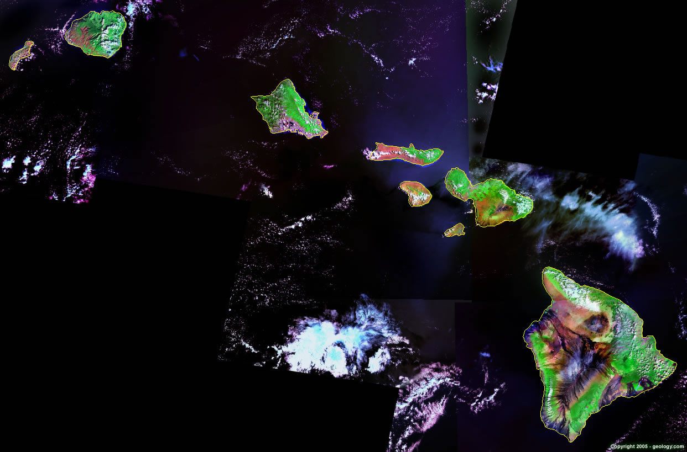

The Pacific Ocean
Cultures-Northern Hemisphere
Homepage
Plants N Animals
Human Impact
Cultures-Southern Hemisphere
Eastern Side Island Cultures
The Eastern side of the northern hemisphere of the Pacific Ocean is home to a small group of islands known as the U.S. state of Hawaii.

Hawaiian culture shows a deep respect for Mother Nature and all living things. From the earliest days, Hawaiians had a belief system that relied on the interconnectedness of mankind and the natural elements. Streams from the mountains dictated the native communities land divisions, otherwise called "ahupua'a," allowing each division equal access to fresh-water streams and terrain (from mountain forest, to flat plains and sea) for agriculture.
Native Hawaiians protected their water sources, taking care not to pollute their streams and only take as much as they needed, they understood the delicate balance of the ecosystem on fresh water sources, recognized their dependence on crops that "wai" enabled them to grow (Taro, a tuber that has sustained them for a thousand years), and ensured that those downstream from them also had enough water.